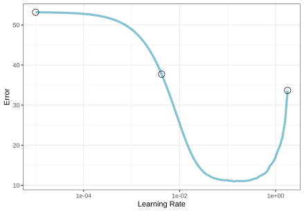
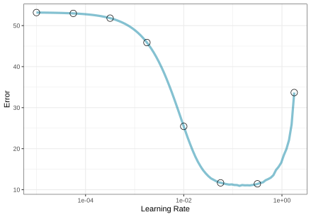
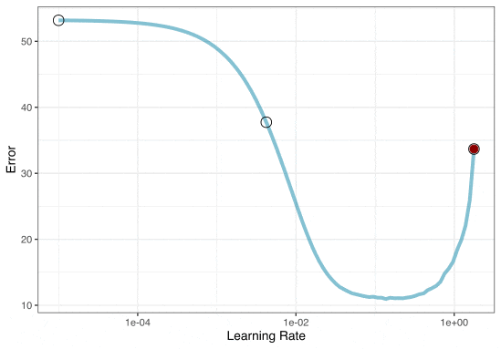
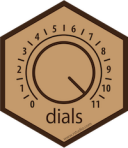
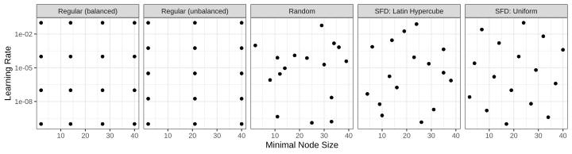
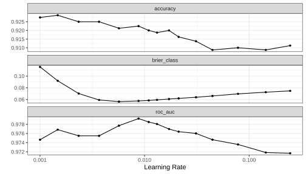
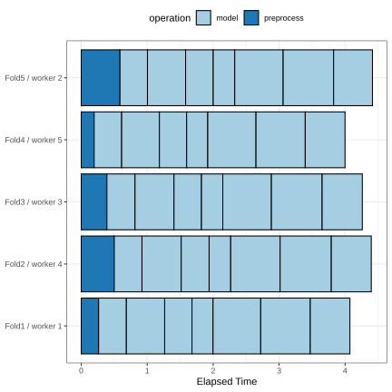
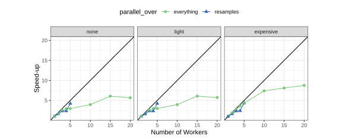
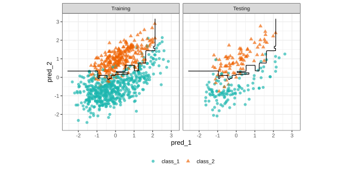
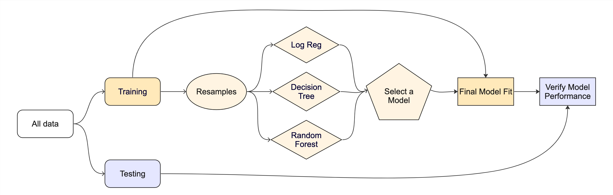

5 - Tuning models
Practical Machine Learning with tidymodels
Previously….
Tuning parameters
Some model or preprocessing parameters cannot be estimated directly from the data.
Some examples:
- Tree depth in decision trees
- Number of neighbors in a K-nearest neighbor model
Optimize tuning parameters
- Try different values and measure their performance.
- Find good values for these parameters.
- Once the value(s) of the parameter(s) are determined, a model can be finalized by fitting the model to the entire training set.
Optimize tuning parameters
The two main strategies for optimization are:
Grid search, which tests a pre-defined set of candidate values.
Iterative search, which suggests/estimates new values of candidate parameters to evaluate.
We won’t be discussing iterative search methods in the regular notes. But you can learn more in AML4TD or in the extra slides for this subject.
Let’s talk about a specific model (boosting) to demonstrate.
Boosted Trees
These are popular ensemble methods that build a sequence of tree models.
Each tree uses the results of the previous tree to better predict samples, especially those that have been poorly predicted.
Each tree in the ensemble is saved, and new samples are predicted using a weighted average of its votes.
We’ll focus on the popular xgboost implementation.
Boosted Tree Tuning Parameters
Some possible parameters:
trees: The number of trees (\([1, \infty]\), but usually up to thousands).min_n: The number of samples needed to further split (\([1, n]\)).learn_rate: The rate that each tree adapts from previous iterations (\((0, \infty]\), usual maximum is about 0.1).stop_iter: The number of iterations of boosting where no improvement was shown before stopping (\([1, trees]\)).
We’ll focus on the learning rate for now.
Your turn

Open the help page for boost_tree() (via ?boost_tree).
Look at the engine documentation for xgboost models.
Grid search
A small grid of points trying to minimize the error via learning rate:

Grid search
In reality, we would probably sample the space more densely:

Iterative Search
We could start with a few points and search the space:

Specifying the model
# xgboost is the default engine
bst_spec <- boost_tree(trees = 500, learn_rate = tune(), mode = "classification")
bst_wflow <- workflow(class ~ ., bst_spec)
bst_wflow
#> ══ Workflow ══════════════════════════════════════════════════════════
#> Preprocessor: Formula
#> Model: boost_tree()
#>
#> ── Preprocessor ──────────────────────────────────────────────────────
#> class ~ .
#>
#> ── Model ─────────────────────────────────────────────────────────────
#> Boosted Tree Model Specification (classification)
#>
#> Main Arguments:
#> trees = 500
#> learn_rate = tune()
#>
#> Computational engine: xgboostWorking with Parameters
tidymodels provides pre-defined information on tuning parameters (such as their type, range, transformations, etc.).
We can:
- Extract the parameter information
- Update their characteristics
- Give their information to
tune_grid(), etc.
mtry_param <-
boost_tree(mtry = tune()) |>
extract_parameter_set_dials()
mtry_param
#> Collection of 1 parameters for tuning
#>
#> identifier type object
#> mtry mtry nparam[?]
#>
#> Model parameters needing finalization:
#> # Randomly Selected Predictors ('mtry')
#>
#> See `?dials::finalize()` or `?dials::update.parameters()` for more
#> information.
mtry_param |>
update(mtry = mtry(c(1, 10)))
#> Collection of 1 parameters for tuning
#>
#> identifier type object
#> mtry mtry nparam[+]
#> Different types of grids


Space-filling designs (SFD) attempt to cover the parameter space without redundant candidates. We recommend these the most, and they are the default.
Try out multiple values
tune_grid() works similar to fit_resamples() but covers multiple parameter values:
Compare results
Inspecting results and selecting the best-performing hyperparameter(s):

Saving predictions
Let’s repeat this process but make sure that we keep the out-of-sample predictions
Checking (Approximate) Calibration
Compare results
Which is numerically best?
show_best(bst_res, metric = "brier_class")
#> # A tibble: 5 × 7
#> learn_rate .metric .estimator mean n std_err .config
#> <dbl> <chr> <chr> <dbl> <int> <dbl> <chr>
#> 1 0.00568 brier_class binary 0.0521 10 0.00395 pre0_mod05_post0
#> 2 0.00876 brier_class binary 0.0528 10 0.00424 pre0_mod06_post0
#> 3 0.0110 brier_class binary 0.0539 10 0.00430 pre0_mod07_post0
#> 4 0.0131 brier_class binary 0.0549 10 0.00452 pre0_mod08_post0
#> 5 0.0171 brier_class binary 0.0559 10 0.00471 pre0_mod09_post0
best_parameter <- select_best(bst_res, metric = "brier_class")
best_parameter
#> # A tibble: 1 × 2
#> learn_rate .config
#> <dbl> <chr>
#> 1 0.00568 pre0_mod05_post0collect_metrics() is also available.
Running in parallel
Grid search, combined with resampling, requires fitting a lot of models!
These models don’t depend on one another and can be run in parallel.
We can use the future or mirai packages to do this:
We’ll use mirai as our parallel backend for our notes.
Distributing tasks
When only tuning the model:

Running in parallel
Speed-ups are fairly linear up to the number of physical cores (10 here).

Your turn
Modify your model workflow to tune additional parameters.
Use grid search to find the best parameter(s).
The whole game - status update
The final fit
Suppose that we are happy with our random forest model.
Let’s fit the model on the training set and verify our performance using the test set.
We’ve shown you fit() and predict() (+ augment()) but there is a shortcut:
bst_final_wflow <- finalize_workflow(bst_wflow, best_parameter)
# cls_split has train + test info
set.seed(690)
final_res <- last_fit(bst_final_wflow, cls_split)
final_res
#> # Resampling results
#> # Manual resampling
#> # A tibble: 1 × 6
#> splits id .metrics .notes .predictions .workflow
#> <list> <chr> <list> <list> <list> <list>
#> 1 <split [800/200]> train/test split <tibble> <tibble> <tibble> <workflow>What is in final_res?
These are metrics computed with the test set
What is in final_res?
collect_predictions(final_res)
#> # A tibble: 200 × 7
#> .pred_class .pred_class_1 .pred_class_2 id class .row .config
#> <fct> <dbl> <dbl> <chr> <fct> <int> <chr>
#> 1 class_1 0.977 0.0234 train/test split class… 1 pre0_m…
#> 2 class_2 0.151 0.849 train/test split class… 3 pre0_m…
#> 3 class_1 0.977 0.0234 train/test split class… 7 pre0_m…
#> 4 class_1 0.977 0.0234 train/test split class… 9 pre0_m…
#> 5 class_2 0.0460 0.954 train/test split class… 12 pre0_m…
#> 6 class_1 0.925 0.0748 train/test split class… 22 pre0_m…
#> 7 class_2 0.0460 0.954 train/test split class… 25 pre0_m…
#> 8 class_1 0.537 0.463 train/test split class… 27 pre0_m…
#> 9 class_1 0.977 0.0234 train/test split class… 28 pre0_m…
#> 10 class_1 0.977 0.0234 train/test split class… 32 pre0_m…
#> # ℹ 190 more rowsWhat is in final_res?
What is in final_res?
extract_workflow(final_res)
#> ══ Workflow [trained] ════════════════════════════════════════════════
#> Preprocessor: Formula
#> Model: boost_tree()
#>
#> ── Preprocessor ──────────────────────────────────────────────────────
#> class ~ .
#>
#> ── Model ─────────────────────────────────────────────────────────────
#> ##### xgb.Booster
#> call:
#> xgboost::xgb.train(params = list(eta = 0.0056848552336798, max_depth = 6,
#> gamma = 0, colsample_bytree = 1, colsample_bynode = 1, min_child_weight = 1,
#> subsample = 1, nthread = 1, objective = "binary:logistic"),
#> data = x$data, nrounds = 500, evals = x$watchlist, verbose = 0)
#> # of features: 2
#> # of rounds: 500
#> callbacks:
#> evaluation_log
#> evaluation_log:
#> iter training_logloss
#> <num> <num>
#> 1 0.6313728
#> 2 0.6268702
#> --- ---
#> 499 0.1113021
#> 500 0.1111371Use this for prediction on new data, like for deploying
Class Boundary

The whole game
